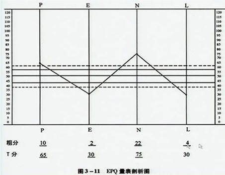

00:00
第二单元 卡氏16种人格因素测验（16PF）
一、学习目标
掌握卡氏16种人格因素测验的实施、记分及结果解释方法。
二、工作程序
(一).测验的实施：
1.凡是有相当于初中以上文化程度的青壮年和老年人都可以适用。
2.16PF 属于团体实施的量表，当然也可以个别实施。
3.本测验每一测题有三个可供选择的答案（A、B、C），答卷纸上相应地附有三个方格，请被试将所选择的答案以“×”为符号，填到相应的方格内。
4.
按此规则，对答卷纸上方的四个“例题”进行练习。
5.
测验没有时限，但被试应以直觉性的反应，依次作答，无须迟疑不决，拖延时间。
应当记住的是：
1.每一测题只能选择一个答案；
2.不可漏掉任何测题；
3.尽量不选择中性答案；
4.有些题目被试可能从未思考过，或者感到不大容易回答。对于这样的题目，同样要求被试作出一种倾向性的选择。
07:57
（二）.测验的记分：
1.每一测题有a、b、c三个答案，分别记为0、1、2分或2、1、0分。
2.聪慧性（因素B）有正确答案。
3.原始分：一般用模板记分，模板有两张，每张可为8个量表记分；
4.标准十分：通过查常模表将原始分换算成标准10分（平均数5.5，标准差1.5）；
5.
按各量表标准10分在剖析图上找到相应圆点，将各点连接成曲线，即可得到被试者的人格剖析图。
10:57
（三）.结果的解释：1～3分为低分，8～10分为高分。
次元人格因素及特殊演算公式的应用：
1．16PF次元人格因素
（1）适应与焦虑 [(38+2L+3O+4Q4 )-(2C+2H+2Q3)]/10
（2）内向与外向 [(2A+3E+4F+5H )-(2Q2+11)]/10
（3）感情用事与安详机警性[(77+2C+2E+2F+2N)-(4A+6I+2M)]/10
（4）怯懦与果断性 [(4E+3M+4Q1+4Q2)-(3A+2G)]/10
2.16PF的应用
（1）心理健康者的人格因素
C+F+(11-O)+(11-Q4)
总分在4～40分之间，平均22分，低于12分者情绪颇不稳定。
（2）从事专业而有成就者的人格因素
2Q3+2G+2C+E+N+Q2+Q1
总分在10～100之间，平均55分，67分以上者应有其成就。
（3）创造能力强者的人格因素
2（11-A）+2B+E+2(11-F)+H+2I+M+(11-N)+Q1+2Q2
总分在15～150之间，88分以上者属创造能力强。
（4）在新环境中有成长能力者的人格因素
B+G+Q3+(11-F)
总分在4～40分之间，平均为22分，27分以上者则有成功的希望。
14:13
三、相关知识
1.关于16PF： 16PF是美国伊利诺州立大学人格及能力测验研究所（Institute of Personality and Ability Testing）的教授卡特尔（Raymond B. Cattell）经几时年的研究和实验，用因素分析法慎重确定和编制而成的。
2.可作为了解心理障碍的个性原因及心理疾病诊断的重要手段，也可用于人才的选拔。
3.16PF英文原版有5种版本：A、B为全版本，C、D为缩减本。
卡特尔的人格理论：
1.卡特尔是人格特质理论的主要代表人物，对人格理论的发转作出了很大的贡献。
2.把特质看成分析人格的最基本的单元。
3.特质是从人的行为推论而得来的。
4.每个人的独特的特质成为个别特质；
5.所有社会成员共同具有的特质称为共同特质。
6.卡特尔从许多人的行为表现中，共抽取出16中根源特质，称为个性因素。
7.还认为，在16种根源特质中，有的起源于体质因素，称为素质特质；有的起源于环境因素，称为环境铸模性特质。
8.这两种特质又都同动力特质、能力特质和气质特质有关。
17:06
卡特尔的人格理论——特质构造之间的关系
卡特尔人格特质因素的理解：
*.动力特质：对目标行动的动力，是人格的动机性因素。
*.能力特质：决定工作的效率，最为重要的是智慧。
*.气质特质：是遗传而来的因素，决定一个人对情境作出反应时所表现的能力强弱、速度快慢和情绪状况，与情绪有关。
18:45
16个因素的名称和高分、低分人格特征：
因素A —乐群性：高分者外向，热情、乐群，术语称环性情感或高情感；低分者缄默、孤独、冷淡
因素B —聪慧性：高分者聪明、富有才识、善于抽象思维；低分者迟钝、学识浅薄。
因素C —稳定性：高分者情绪稳定而成熟；低分者情绪激动不稳定。
因素E —恃强性：高分者好强、固执、独立、积极，称支配性；低分者谦逊、通融，称顺从性。
因素F —兴奋性：高分者轻松兴奋、随遇而安；低分者严肃、审慎、冷静、寡言。
因素G —有恒性：高分者有恒负责、做事尽职、重良心；低分者苟且敷衍、缺乏奉公守法精神、原则性差。
因素H —敢为性：高分者冒险敢为，少有顾忌，主动性强；低分者畏怯畏缩、缺乏自信。
因素I —敏感性：高分者敏感、感情用事；低分者理智、着重实际、自食其力。
因素L —怀疑性：高分者怀疑、刚愎、固执己见；低分者信赖随和、易与人相处，称放松。
因素M —幻想性：高分者富于幻想、狂放任性；低分者现实、合乎成规、力求完善合理，称实际性
因素N—世故性：高分者精明能干、圆滑、世故、人情练达、善于处世，称机灵性；低分者坦白、直率、天真，称朴实型。
21:48
因素O —忧虑性：高分者忧虑抑郁、烦恼自忧、沮丧悲观，称易于内疚；低分者安详、沉着、有自信心。
因素Q1 —实验性：高分者自由、开放、激进，不拘泥于现实；低分者保守、尊重传统观念与道德准则，称保守性。
因素Q2 —独立性：高分者自主自强、当机立断；低分者依赖、随群、附众。
因素Q3 —自律性：高分者知己知彼、自律严谨；低分者矛盾冲突、不顾大体、不能自制、松懈，随心所欲。
因素Q4—紧张性：高分者紧张困扰、激动挣扎、心神不定、疲乏；低分者心平气和、闲散宁静、知足常乐。
四、注意事项
1. 测验过程中必须使用经协作组修订过的卡氏16种人格因素问题和答卷纸，不得改变任一测题的语句，或者超出范围给予被试者以帮助。
2.187个有关兴趣和态度的问题。每个人对问题会有不同的看法，回答也是不同的，并没有“对”与“不对”之分，让被试者不要有所顾虑。
3.测验时，先完成答案纸上的四个例题。被试者掌握了答题方式后，方可进行正式测验。
4.确保被试者每题只选择一个答案，没有遗漏任何测题，并尽量不选择中性答案。
25:31
第三单元 艾森克人格问卷（EPQ）
一、学习目标
掌握 EPQ 的施测与记分方法。
掌握 EPQ 的剖析图分析方法。
二、工作程序
(一).测验的实施：英国艾森克及夫人根据因素分析法编制，1975年。
艾森克人格问卷（EPQ），
龚耀先 1983年修订中文版。
26:22
艾森克个性问卷（成人）
EPQ（Adult）
方法：在这张问卷上印有1-88共88个问题，在另一张答卷上印有1-88共88对“是”和“否”。请你依次回答这些问题，回答不要写字，只将答卷上的“是”或“否”圈一个圈。这些问题要求你按自己的实际情况回答，不要去猜测怎样才是正确的回答。因为这里不存在正确或错误的回答，也没有捉弄人的问题，将问题的意思看懂了就快点回答，不要花很多时间去想。
在开始回答前，先在答卷上写好你的性别（男或女），你的出生年月日，教育年限，以及现在的年月日。一定写在答卷上，不要写在问卷上。将答卷上第一行套在问卷第一版各题的后面，使两对黑三角形对齐，这时问卷上的题号恰好与答卷上的题号一一配好，注意！一定要将1题对好答卷上的1题，第2题对准第2题，其他都一样。以后再回答，回答时经常将两对黑三角形对好。第一版答完，将答卷依摺叠线摺好，让答卷第2行与问卷上的黑三角形对齐。第二版答完便答第三版，方法相同。
懂了吗？不懂可以问。好！现在开始填写性别，出生年月日等。填写好后便回答。
26:45
每一条都要回答。问卷无时间限制，但不要拖延太长，也不要未看懂问题便回答。
1.你是否有许多不同的业余爱好？
2.你是否在做任何事情以前都要停下来仔细思考？
3.你的心境是否常有起伏？
4.你曾有过明知是别人的功劳而你去接受奖励的事吗？
5.你是否健谈？
6.欠债会使你不安吗？
7.你曾无缘无故觉得“真是难受”吗？
8.你曾经贪图过分外之物吗？
9.你是否在晚上小心翼翼地关好门窗？
10.你是否比较活跃？
27:26
精神质（P）、内外向（E）
神经质（N）、 说谎（L）
成人问卷用于调查16岁以上成人；
幼年问卷用于7至15岁。
1.对每个项目必须作回答，且只能回答是或否。
2.发绢后，向被试说明方法，然后逐条回答，这是纸笔测验的一种。
（二）记分：统计出被试在各量表上获得的总分（粗分）；
按年龄和性别常模换算出标准T分；
绘制 EPQ 量表剖析图。
30:12
（三）结果的解释：
EPQ 量表剖析图

中间型（43.3 ～ 56.7）
倾向型（38.5 ～ 43.3 或 56.7 ～ 61.5）
典型型（＜38.5 或 ＞61.5）
33:51
E 和N 的关系图
37:07
三、相关知识
（一）.关于EPQ的发展
（二）.量表的简要解释
1.E（内向-外向）：分数高表示人格外向，可能是好交际，渴望刺激和冒险，情感易于冲动。分数低表示人格内向，可能是好静，富于内省，除了亲密的朋友之外，对一般人缄默冷淡，不喜欢刺激，喜欢有秩序的生活方式，情绪比较稳定。
2.N(神经质)：反映的是正常行为，并非指神经症。分数高者常常焦虑、担忧、郁郁不乐、有心忡忡，遇到刺激有强烈的情绪反应，以至出现不够理智的行为。分数低者情绪反应缓慢且轻微，很容易恢复平静，他们通常是稳重、性情温和、善于自我控制。
3.P（精神质）：并非暗指精神病，它在所有人身上都存在，只是程度不同。高分者可能是孤独、不关心他人，难以适应外部环境，不近人情，感觉迟钝，与他人不友好，喜欢寻衅搅扰，喜欢干奇特的事情，并且不顾危险。低分者能与人相处，能较好地适应环境，态度温和、不粗暴、善从人意。
四、注意事项
每一项目只要求被试者回答一个“是”或“否”，一定要作一回答，而且只能回答是或否，不可遗漏任何一题的回答。